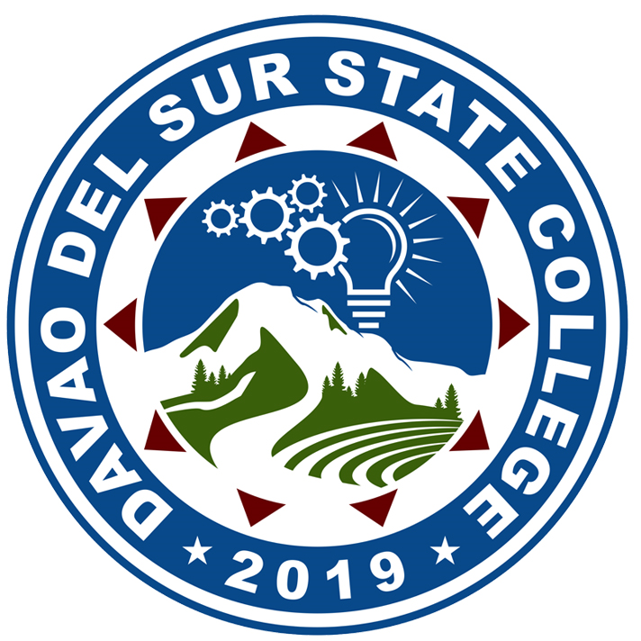

Incubation Program
- Startup screening and onboarding
- Mentorship and capability building
- Product development guidance
- Market and investor readiness

The Agri-Food Innovation TBI is a strategic hub for research-to-market support, enterprise building, and technology commercialization. This static page gives you a reusable landing layout outside the Laravel app.
Screening, mentoring, validation, and venture support.
Co-working, equipment use, training, and collaboration spaces.
Branding, market readiness, investor support, and planning.
Government, mentors, markets, and innovation networks.
Static public cards modeled after the existing project’s service highlights.
Access shared facilities, mentoring, and market linkages to turn agri-food innovations into viable enterprises.
Duplicate this page for About, Partners, Mentors, or Team pages. The styling stays in one CSS file and the interactivity stays in one JS file.